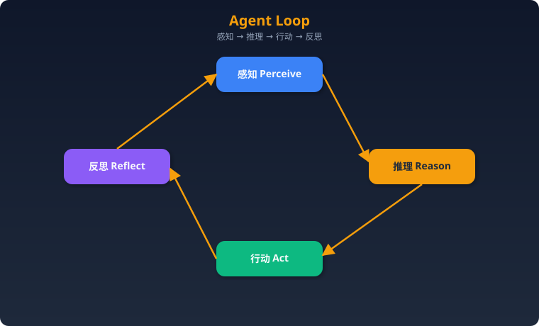

核心概念与设计模式
一、Agent 核心概念
什么是 AI Agent？
AI Agent 是能够感知环境、推理决策、制定计划、执行行动的自主 AI 系统。与传统 LLM 应用的区别： - 传统 LLM：输入→输出，单次调用，无状态，确定性流程 - AI Agent：感知→推理→规划→执行→观察→循环，多步自主决策，有状态，动态流程
核心差异在于自主性和闭环反馈。传统 LLM 应用是开发者预定义的流水线（如 RAG：检索→拼接→生成），每一步由代码控制；Agent 则由 LLM 自己决定下一步做什么，形成"感知-推理-行动-反思"的自主循环，能根据中间结果动态调整策略。
Agent 四大核心能力
- 感知（Perception）：接收用户输入、环境反馈、工具返回结果、系统事件通知
- 推理（Reasoning）：分析当前状况，做出判断，包括意图理解、信息综合、因果推断
- 规划（Planning）：制定多步行动计划，包括任务分解、优先级排序、资源分配
- 行动（Action）：调用工具、生成输出、与环境交互、修改状态
Agent Loop（感知-推理-行动-反思循环）
Agent 的核心运行机制是一个持续的循环，也称 Agent Loop 或 Cognitive Loop：

详细步骤： 1. 感知：收集输入信息（用户消息、工具返回、环境状态） 2. 推理：LLM 分析所有可用信息，理解当前状态与目标的差距 3. 规划/决策：决定下一步行动——调用工具、回复用户、或终止 4. 行动：执行决策（调用 API、运行代码、生成文本） 5. 观察：接收行动结果 6. 反思：评估结果是否满足目标，是否需要调整策略 7. 循环或终止：未完成则回到步骤1，完成则输出最终结果
伪代码：
def agent_loop(task, max_steps=20):
context = initialize_context(task)
for step in range(max_steps):
# 感知 + 推理 + 决策
action = llm.decide(context)
if action.type == "finish":
return action.output
# 行动
observation = execute(action)
# 反思（可选）
reflection = llm.reflect(context, action, observation)
# 更新上下文
context.append(action, observation, reflection)
return "达到最大步数，任务未完成"
关键设计考量： - 终止条件：必须有明确的退出机制（max_steps、目标达成判断、用户中断） - 上下文膨胀：每轮循环增加 token，需要策略控制（摘要压缩、滑动窗口） - 错误累积：多步推理中早期错误会放大，需要纠错机制
记忆系统
记忆分类与实现
| 记忆类型 | 定义 | 生命周期 | 实现方案 |
|---|---|---|---|
| 短期记忆 | 当前对话上下文 | 单次会话 | LLM Context Window 直接存放 |
| 工作记忆 | 当前任务中间状态 | 单次任务 | Scratchpad / State Object |
| 长期记忆 | 跨会话持久化知识 | 永久 | 向量数据库 + 文件系统 |
| 情景记忆 | 过往经验和成功案例 | 永久 | 结构化存储 + 相似度检索 |
| 语义记忆 | 通用知识和事实 | 永久 | 知识图谱 / RAG |
具体实现方案
短期记忆 — Context Window 管理： - 直接将对话历史放入 prompt - 当 token 超限时使用滑动窗口（保留最近 N 轮）或摘要压缩（LLM 总结历史） - 策略：保留系统提示 + 最近 K 轮原文 + 更早内容的摘要
长期记忆 — 向量数据库方案：
# 存储：将对话/经验嵌入为向量
embedding = embed_model.encode(memory_text)
vector_db.upsert(id=memory_id, vector=embedding, metadata={
"timestamp": now, "type": "episode", "importance": score
})
# 检索：根据当前查询找到相关记忆
relevant = vector_db.query(
vector=embed_model.encode(current_query),
top_k=5,
filter={"timestamp": {"$gt": cutoff_time}}
)
- 推荐数据库：Chroma（轻量）、Pinecone（托管）、Qdrant（自部署）、Weaviate
- 嵌入模型：text-embedding-3-small/large、BGE、E5
长期记忆 — 文件系统方案： - Markdown 文件存储结构化笔记（如 MEMORY.md） - 适合规模较小、人类可读的场景 - 优点：简单、可编辑、版本控制友好；缺点：检索能力弱
工作记忆 — Redis / 内存方案： - 任务执行过程中的中间状态、变量、子任务结果 - Redis 适合多 Agent 共享状态；内存适合单 Agent 单任务
记忆检索策略
- 相似度检索：基于语义相似度（余弦距离）找最相关记忆
- 时间衰减：近期记忆权重更高，score = similarity × decay(time)
- 重要性加权：关键事件（用户偏好、纠错经验）赋予高权重
- 混合检索：结合语义检索 + 关键词检索（BM25）+ 时间衰减
def retrieve_memory(query, memories):
scores = []
for m in memories:
sim = cosine_similarity(embed(query), m.embedding)
recency = decay_factor(now() - m.timestamp) # 指数衰减
importance = m.importance_score # 0-1
final_score = sim * 0.5 + recency * 0.3 + importance * 0.2
scores.append((m, final_score))
return sorted(scores, key=lambda x: -x[1])[:top_k]
记忆衰减和清理
- 指数衰减：
weight = e^(-λt)，λ 控制衰减速率 - 访问频率：被频繁访问的记忆权重提升（类似缓存 LRU）
- 定期清理：后台任务删除过期/低分记忆，防止存储膨胀
- 摘要合并：将多条旧记忆合并为一条摘要记忆，保留核心信息
- 分层存储：热数据（内存/Redis）→ 温数据（向量库）→ 冷数据（归档/删除）
工具使用（Tool Use）
Function Calling vs Tool Use 的区别
| 对比项 | Function Calling | Tool Use |
|---|---|---|
| 定义 | OpenAI 特定的 API 机制 | 通用概念，Agent 调用外部能力 |
| 实现 | 模型输出结构化 JSON 调用 | 可通过 FC、文本解析、MCP 等多种方式 |
| 范围 | 单次或并行函数调用 | 包括搜索、代码执行、API、人类交互等 |
| 执行 | 开发者在客户端执行函数 | Agent 框架编排执行 |
Function Calling 是 Tool Use 的一种具体实现方式。OpenAI 的 FC 由模型原生支持，输出结构化的 function_name + arguments JSON；而 Tool Use 是更广泛的模式——Agent 也可以通过在文本中输出特定格式（如 Action: search\nAction Input: query）来调用工具。
工具描述的最佳实践
好的工具描述直接影响 Agent 选择正确工具的概率：
# ❌ 差的描述
{"name": "search", "description": "搜索"}
# ✅ 好的描述
{
"name": "web_search",
"description": "在互联网上搜索实时信息。适用于需要最新数据（新闻、价格、天气）或你知识库中没有的事实。不适用于：已知的常识问题、数学计算、代码生成。",
"parameters": {
"query": {
"type": "string",
"description": "搜索查询词，应具体且信息丰富，如'2024年诺贝尔物理学奖获得者'而非'诺贝尔奖'"
}
}
}
原则： 1. 说明适用场景和不适用场景，帮助 LLM 判断何时使用 2. 参数描述包含格式示例 3. 说明返回值的格式和含义 4. 工具数量控制在 10-20 个以内，过多会降低选择准确率
多工具编排策略
- 顺序调用：工具 A 的输出是工具 B 的输入（pipeline）
- 并行调用：多个独立工具同时执行（OpenAI parallel_tool_calls）
- 条件调用：根据上一步结果决定下一步调用哪个工具
- 迭代调用：反复调用同一工具直到满足条件（如搜索→判断→再搜索）
- 工具组合：将常用工具序列封装为高级工具（减少 Agent 决策步骤）
二、Agent 设计模式
1. ReAct（Reasoning + Acting）
最经典的 Agent 模式，将推理和行动交织在一起。
工作流程： 1. Thought：分析当前状态，思考下一步该做什么 2. Action：决定调用哪个工具，用什么参数 3. Observation：接收工具执行结果 4. 重复 1-3，直到能给出最终答案
伪代码：
def react_agent(question, tools, max_iters=10):
prompt = f"Answer: {question}\nYou have tools: {tools}"
history = []
for i in range(max_iters):
response = llm.generate(prompt + format(history))
if response.has_final_answer:
return response.answer
# 解析 Thought + Action
thought, action, action_input = parse(response)
observation = execute_tool(action, action_input)
history.append((thought, action, action_input, observation))
return "无法得出答案"
适用场景： - 需要多步推理 + 信息检索的问答 - 问题不确定需要几步，需要动态探索 - 中等复杂度任务
不适用场景： - 任务非常简单（一步完成，ReAct 过重） - 任务极端复杂，需要全局规划后再执行 - 需要并行执行多个子任务
优缺点： | 优点 | 缺点 | |------|------| | 简单直观，易于实现和调试 | 无全局规划，容易陷入局部最优 | | 推理过程可解释（Thought 可见） | 上下文随步骤快速增长 | | 灵活应对意外情况 | 可能产生循环（重复同样的行动） |
2. Plan-and-Execute
先制定完整计划，再逐步执行。将规划和执行分离。
工作流程： 1. Planner 接收任务，生成有序步骤列表 2. Executor 按顺序执行每个步骤 3. 每步执行完毕后，可选地让 Replanner 根据中间结果调整后续计划 4. 所有步骤完成后汇总输出
伪代码：
def plan_and_execute(task, tools):
# Phase 1: 规划
plan = planner_llm.generate(f"为以下任务制定步骤计划：{task}")
steps = parse_plan(plan) # ["步骤1: ...", "步骤2: ...", ...]
results = []
for i, step in enumerate(steps):
# Phase 2: 执行（每步可以是一个 ReAct 子循环）
result = executor.run(step, context=results)
results.append(result)
# Phase 3: 可选 - 重新规划
remaining = steps[i+1:]
revised = replanner_llm.generate(
f"已完成：{results}\n原计划剩余：{remaining}\n是否需要调整？"
)
if revised.changed:
steps = steps[:i+1] + revised.new_steps
return synthesize(results)
适用场景： - 复杂多步任务（写研究报告、项目管理） - 任务结构较明确，可以预先分解 - 需要可见的进度跟踪
不适用场景： - 高度不确定的探索性任务（无法预先规划） - 简单的单步任务 - 实时交互场景（规划阶段延迟高）
优缺点： | 优点 | 缺点 | |------|------| | 全局视野，步骤有序 | 初始规划可能不准确 | | 进度可跟踪 | Planner + Executor 双重 LLM 调用，成本高 | | 可以使用不同模型（强模型规划 + 弱模型执行） | 计划调整（Replan）增加复杂度 |
3. Reflection / Self-Critique
Agent 生成输出后自我评估，不满意则迭代改进。
工作流程： 1. Agent 生成初始输出 2. Critic（可以是同一个 LLM 或专门的评估 LLM）评估输出质量 3. 如果不满意，生成改进建议 4. Agent 根据反馈修改输出 5. 重复 2-4 直到满意或达到最大迭代次数
伪代码：
def reflection_agent(task, max_rounds=3):
output = generator_llm.generate(task)
for round in range(max_rounds):
critique = critic_llm.evaluate(
task=task, output=output,
criteria=["准确性", "完整性", "逻辑性"]
)
if critique.is_satisfactory:
return output
output = generator_llm.revise(
task=task,
previous_output=output,
feedback=critique.suggestions
)
return output # 返回最后一版
适用场景： - 内容生成（文章、代码、报告）需要高质量输出 - 有明确评估标准的任务 - 对正确性要求高（如数学证明、法律文书）
不适用场景： - 实时性要求高的场景（多轮反思增加延迟） - 任务本身没有明确的好坏标准 - 简单事实查询
优缺点： | 优点 | 缺点 | |------|------| | 显著提升输出质量 | 多轮 LLM 调用，成本和延迟倍增 | | 可定制评估维度 | LLM 自我评估能力有限（可能"虚假改进"） | | 模拟人类"写-改-写"的创作过程 | 可能过度修改，越改越差 |
4. Tool-Use Pattern
Agent 动态选择和调用工具完成子任务。这是所有 Agent 的基础能力，常与其他模式组合使用。
工作流程： 1. 接收任务描述 2. LLM 根据任务和可用工具列表，决定是否需要调用工具 3. 如果需要，生成工具名和参数 4. 执行工具调用，获取结果 5. LLM 根据工具结果决定下一步（继续调用工具 or 输出答案）
适用场景： 几乎所有需要与外部系统交互的任务 关键挑战： 工具选择准确率、参数生成正确性、工具调用失败处理
5. Multi-Agent Patterns
Supervisor 模式
 - 主 Agent（Supervisor）接收任务，分配给专业子 Agent
- Supervisor 负责任务分解、结果汇总、质量把控
- 子 Agent 专注于单一领域（搜索、写作、代码等）
- 主 Agent（Supervisor）接收任务，分配给专业子 Agent
- Supervisor 负责任务分解、结果汇总、质量把控
- 子 Agent 专注于单一领域（搜索、写作、代码等）
伪代码：
def supervisor_agent(task, sub_agents):
plan = supervisor_llm.decompose(task)
results = {}
for subtask in plan:
agent = supervisor_llm.assign(subtask, sub_agents)
result = agent.execute(subtask, context=results)
results[subtask.id] = result
return supervisor_llm.synthesize(results)
Debate 模式
- 多个 Agent 对同一问题给出独立答案
- 互相审查和辩论
- 通过多轮辩论收敛到最佳答案
- 适用：需要高准确性、有争议的判断类问题
Pipeline 模式
- Agent 间流水线式传递：Agent1 → Agent2 → Agent3
- 每个 Agent 处理一个阶段（如：研究→写初稿→审校）
- 适用：任务有明确的阶段划分
Peer-to-Peer 模式
- Agent 间平等协作，通过共享状态或消息传递
- 无中心控制节点
- 适用：去中心化、容错性要求高的场景
多 Agent 系统的关键设计问题： 1. 通信机制：共享内存 / 消息队列 / 函数调用 2. 状态管理：全局状态 vs 局部状态 3. 冲突解决：当 Agent 意见冲突时如何决策 4. 成本控制：多 Agent = 多倍 Token 消耗
6. Human-in-the-loop
关键决策点暂停，等待人工审批后继续。
实现方式： 1. 审批门（Approval Gate）：Agent 在执行高风险操作前暂停等待确认 2. 纠正反馈：人类可以在中途修改 Agent 的计划或输出 3. 升级机制：Agent 遇到不确定情况时主动请求人类介入
适用场景： - 涉及金钱交易、数据修改、外部通信等不可逆操作 - 合规要求高的行业（金融、医疗、法律） - Agent 置信度低的判断
7. CodeAct 模式
CodeAct 是一种让 Agent 通过生成和执行代码来完成任务的模式，而非通过结构化的工具调用。
核心思想： - 不预定义工具集，而是让 Agent 直接写 Python（或其他语言）代码 - 代码在沙箱环境中执行，Agent 观察输出后继续
工作流程： 1. Agent 分析任务，生成 Python 代码 2. 代码在安全沙箱中执行 3. Agent 观察执行结果（stdout/stderr） 4. 根据结果继续写代码或给出最终答案
伪代码：
def codeact_agent(task, sandbox):
history = [{"role": "user", "content": task}]
while True:
response = llm.generate(history)
if response.is_final_answer:
return response.text
code = extract_code(response)
result = sandbox.execute(code) # 沙箱执行
history.append({"role": "assistant", "content": response.text})
history.append({"role": "tool", "content": f"执行结果:\n{result}"})
优点： 灵活性极高，不受预定义工具限制；LLM 天然擅长生成代码 缺点： 安全风险（需要严格沙箱）；代码执行不确定性；调试困难 适用： 数据分析、自动化脚本、开发类任务 不适用： 需要调用特定 API（不如 FC 直接）、安全敏感环境
三、Prompt Engineering 进阶
Chain-of-Thought (CoT)
- 让 LLM 逐步推理，而非直接给答案
- "Let's think step by step"
- 变体：
- Zero-shot CoT：仅加"Let's think step by step"
- Few-shot CoT：提供推理示例
- Tree of Thoughts (ToT)：多条推理路径并行探索，选最优
- Graph of Thoughts (GoT)：推理路径可合并和回溯
上下文工程（Context Engineering）
- 2025 新趋势，比 Prompt Engineering 更广
- 不仅关注 Prompt 本身，还关注提供给 LLM 的整体上下文
- 包括：系统提示、用户输入、检索内容（RAG）、工具返回、历史对话、Agent 记忆
- 核心：在有限 Context Window 内放入最有价值的信息
- 技术手段：信息优先级排序、动态上下文构建、压缩与摘要
结构化输出
- 要求 LLM 以 JSON/YAML 格式输出
- OpenAI Structured Output / JSON Mode / Pydantic + instructor
- 使 Agent 能可靠解析 LLM 输出，减少格式错误
- 关键技术：Schema 约束、重试解析、Guardrails
四、MCP / A2A 等新兴协议
MCP（Model Context Protocol）
- Anthropic 提出的开放协议
- 标准化 LLM 与外部工具/数据源的连接方式
- 类比"AI 的 USB 接口"
- 架构：Server 提供工具/资源/提示，Client（LLM 应用）通过标准协议调用
- 传输：stdio（本地）/ SSE+HTTP（远程）
- 核心价值：一次开发工具，所有支持 MCP 的 Agent 都能用
A2A（Agent-to-Agent）
- Google 提出的 Agent 间通信协议
- 让不同框架/平台的 Agent 可以互相发现、通信和协作
- 基于 Agent Card（描述 Agent 能力）+ Task 协议
ANP（Agent Network Protocol）
- 蚂蚁集团提出的智能体网络协议
- 面向开放网络环境的 Agent 互联，强调身份认证和安全
五、Agent 可靠性工程
重试机制
def reliable_tool_call(tool, args, max_retries=3):
for attempt in range(max_retries):
try:
result = tool.execute(args)
return result
except TransientError as e:
wait = 2 ** attempt # 指数退避
sleep(wait)
except PermanentError as e:
return fallback(tool, args, error=e)
return "工具调用失败，已达最大重试次数"
回退策略（Fallback）
- 工具回退：主工具失败时切换到备用工具（如 Google 搜索 → Bing 搜索）
- 模型回退：主模型超时/报错时降级到备用模型
- 策略回退：Agent 循环检测 → 强制切换策略或请求人工介入
超时控制
- 单步执行超时：防止工具调用无限等待
- 总任务超时：防止 Agent 无限循环
- Token 预算超时：达到 Token 上限时强制结束
循环检测
def detect_loop(history, window=5):
"""检测 Agent 是否在重复相同的行动"""
recent_actions = [h.action for h in history[-window:]]
if len(set(recent_actions)) <= 2: # 最近5步只有1-2种不同行动
return True
return False
六、Agent 成本控制
Token 预算管理
class TokenBudget:
def __init__(self, max_tokens=100000):
self.max_tokens = max_tokens
self.used_tokens = 0
def can_proceed(self, estimated_cost):
return self.used_tokens + estimated_cost < self.max_tokens
def record(self, actual_cost):
self.used_tokens += actual_cost
模型路由（Model Routing）
根据任务复杂度选择不同模型，优化成本： - 简单任务（分类、提取）→ 小模型（GPT-4o-mini、Claude Haiku） - 中等任务（一般推理）→ 中等模型（GPT-4o、Claude Sonnet） - 复杂任务（规划、代码生成）→ 强模型（Claude Opus、o1）
def route_model(task_complexity: str):
routing = {
"simple": "gpt-4o-mini", # $0.15/1M input
"medium": "gpt-4o", # $2.5/1M input
"complex": "claude-opus", # $15/1M input
}
return routing[task_complexity]
其他成本控制策略
- 缓存：相同/相似查询使用缓存结果（Semantic Cache）
- 提前终止：置信度足够高时提前返回，不继续迭代
- 上下文压缩：摘要历史对话，减少输入 token
- 批量处理：合并多个小请求为一次大请求
七、评估与监控
Agent 评估维度
- 任务完成率：Agent 能否正确完成目标
- 步骤效率：完成任务所需步骤数
- 工具调用准确率：是否选择了正确的工具和参数
- 幻觉率：输出中不准确信息的比例
- 延迟：端到端响应时间
- 成本：Token 消耗和 API 调用费用
评测框架
- RAGAS：RAG 系统评测
- TruLens：LLM 应用评测
- LangSmith：LangChain 生态的追踪和评测平台
- AgentBench：Agent 能力基准测试
- SWE-bench：代码 Agent 评测（解决 GitHub issue）
- GAIA：通用 AI Agent 基准
八、高频面试题
基础概念
1. AI Agent 和传统 LLM 应用的本质区别是什么？
参考答案： 本质区别在于控制流的归属和自主决策能力。传统 LLM 应用（如 RAG 管道）的执行流程由开发者在代码中预定义——检索哪个知识库、怎么拼接 prompt、调用几次模型，都是硬编码的确定性流程，LLM 只负责文本生成这一个环节。而 AI Agent 将控制流交给 LLM 自身——模型根据当前状态决定下一步做什么：是调用搜索工具、执行代码、还是直接回答；是继续探索还是结束任务。Agent 具备感知-推理-行动-反思的闭环能力，能根据中间结果动态调整策略。简单说，传统 LLM 应用是"人设计流程，模型填内容"；Agent 是"人设定目标，模型自己决定怎么达到目标"。当然这也带来了不确定性和可控性的挑战，所以生产环境中 Agent 往往需要配合 guardrails、超时、人工审批等机制。
2. Agent 的记忆系统如何设计？长短期记忆各怎么实现？
参考答案： Agent 的记忆系统模仿人类认知，通常分为四层。短期记忆就是当前对话上下文，直接存在 LLM 的 context window 里，受限于窗口大小（如 128K token），需要滑动窗口或摘要压缩来管理。工作记忆是当前任务的中间状态和临时变量，用 scratchpad 或内存对象存储，任务结束即清除。长期记忆跨会话持久化，主流方案是向量数据库（如 Chroma、Pinecone）存储嵌入向量，检索时用语义相似度匹配；也可用文件系统存 Markdown（简单但检索弱）。情景记忆记录过往成功/失败的经验案例，检索时结合语义相似度 + 时间衰减 + 重要性加权来排序。实际工程中需要考虑记忆清理（过期淘汰、摘要合并）防止存储膨胀，以及分层存储（热数据 Redis → 温数据向量库 → 冷数据归档）优化性能。
3. 什么是 Tool Use / Function Calling？Agent 如何决定用哪个工具？
参考答案： Tool Use 是 Agent 调用外部工具（搜索、API、代码执行等）来获取信息或执行操作的能力。Function Calling（FC）是其最常见的实现方式——开发者向 LLM 提供工具的结构化描述（名称、功能描述、参数 schema），LLM 在推理过程中决定是否调用工具，并输出结构化的调用指令（工具名 + JSON 参数），由 Agent 框架执行后将结果返回给 LLM。Agent 选择工具的关键在于工具描述的质量——描述应明确说明适用场景和不适用场景，参数应有格式示例。LLM 根据当前任务需求和工具描述进行语义匹配来选择。实践中还需注意：工具数量不宜过多（10-20 个为佳），可用工具路由/分类减少候选集；工具调用结果需要做错误处理和格式化，确保 LLM 能正确理解。
4. 解释 ReAct 模式的工作原理
参考答案： ReAct（Reasoning + Acting）将推理和行动交织进行，是最经典的 Agent 设计模式。其工作循环为：Thought（思考当前状况和下一步）→ Action（选择并调用工具）→ Observation（观察工具返回结果）→ 循环直到能给出最终答案。与纯推理（CoT）相比，ReAct 能通过工具获取外部信息，避免幻觉；与纯行动相比，显式的 Thought 步骤让推理过程可解释、可调试。例如回答"2024 年 GDP 最高的城市"：Thought 1: 需要查最新数据 → Action: web_search("2024 GDP 最高城市") → Observation: 搜索结果... → Thought 2: 搜索结果显示是纽约，但需要确认 → Action: web_search("2024 NYC GDP") → Observation: ... → Final Answer。缺点是没有全局规划，可能走弯路或陷入循环，上下文也会随步骤快速膨胀。
5. 单 Agent vs 多 Agent 系统，如何选择？
参考答案： 选择依据主要看任务复杂度、专业性分化程度、并行需求。单 Agent 适合：任务步骤线性可控、不需要多领域专业知识、对延迟敏感、系统简单性优先的场景。优点是架构简单、调试容易、成本可控。多 Agent 适合：任务涉及多个专业领域（如"研究+写作+代码"）、子任务可并行执行、需要交叉检验提高准确性、单个上下文窗口装不下所有信息。多 Agent 模式包括 Supervisor（中心调度）、Pipeline（流水线）、Debate（辩论求最优）、Peer-to-Peer（平等协作）。但多 Agent 的代价是显著的：通信开销、状态同步复杂度、成本倍增（每个 Agent 都消耗 token）、调试难度急剧上升。实践建议：先用单 Agent 解决，确认瓶颈后再拆分为多 Agent，避免过度设计。
设计与架构
6. 如何设计一个 Agent 来完成「自动调研+写报告」的任务？
参考答案： 推荐 Plan-and-Execute + Multi-Agent 组合方案。架构： Supervisor Agent 总控，下设 Research Agent（调研）和 Writer Agent（写作）。流程： 1) Supervisor 接收课题，生成调研提纲（子话题列表）；2) Research Agent 对每个子话题执行 ReAct 循环——搜索、阅读网页、提取关键信息、交叉验证——产出结构化调研笔记；3) Writer Agent 根据调研笔记撰写报告初稿，使用 Reflection 模式自我审查逻辑和引用准确性；4) Supervisor 审查报告质量，不满意则反馈修改意见重做。关键技术点： 搜索工具 + 网页读取工具 + 文件写入工具；调研笔记用结构化格式传递，减少信息损失；对搜索结果做去重和可信度排序；设置 Token 预算防止调研阶段成本失控。
7. 多 Agent 系统中如何处理 Agent 间的通信和状态共享？
参考答案： 主流有三种方式。共享内存/黑板模式：所有 Agent 读写同一个状态对象（如 LangGraph 的 State），简单直接但需要处理并发冲突。消息传递：Agent 间通过消息队列（如 Redis Pub/Sub）通信，解耦性好、支持异步，但增加架构复杂度。函数调用：Supervisor 直接调用子 Agent 的接口并获取返回值，最简单但耦合度高。状态共享的关键挑战：①上下文隔离——每个 Agent 只看自己需要的信息，避免 context 过载；②一致性——多 Agent 并行修改共享状态时需要锁或冲突解决策略；③通信格式——Agent 间传递的信息需要结构化（JSON/Markdown），减少理解歧义。实践中常用 LangGraph 的 StateGraph 或 CrewAI 的 Process 模式来管理。
8. 如何实现 Human-in-the-loop？什么场景需要它？
参考答案： Human-in-the-loop（HITL）在 Agent 执行流程中设置人工检查点。实现方式： 1) 审批门：Agent 在执行高风险操作（发邮件、转账、删除数据）前暂停，展示计划让人确认；2) 置信度触发：当 Agent 对决策的置信度低于阈值时主动请求人工帮助；3) 定期检查：每执行 N 步暂停让人审查进度和方向。技术实现上，可以用异步状态机（Agent 状态持久化到数据库，等待人类回调后恢复），或简单的中断-等待机制。需要 HITL 的场景： 涉及不可逆操作（资金转账、生产环境变更）、合规要求严格的行业（金融、医疗）、Agent 能力边界外的判断（主观决策、伦理问题）、初始上线阶段建立信任。HITL 的关键是平衡效率和安全——太多检查点 Agent 就退化成了工作流工具。
9. Agent 的错误处理和容错机制如何设计？
参考答案： 需要在多个层次设计容错。工具层： 每个工具调用包装重试逻辑（指数退避，最多 3 次）、备用工具回退（搜索引擎 A 失败切换到 B）、超时控制（15-30 秒）。推理层： 循环检测（最近 N 步是否在重复同一行动）、死胡同检测（连续多步无进展则切换策略）、上下文溢出保护（接近 token 上限时压缩历史）。任务层： 总步骤上限（max_steps）、总 token 预算、总时间超时。输出层： 结构化输出解析失败时重试或回退到文本解析、Guardrails 检查输出合规性。兜底策略： 所有自动处理都失败时，优雅降级——向用户说明情况并请求帮助，而非返回错误或幻觉答案。关键原则是失败应该是可预见的、可观测的、可恢复的。
10. 如何控制 Agent 的成本（Token 消耗、API 调用）？
参考答案： 四个维度控制。预算机制： 为每个任务设置 Token 预算上限（如 100K token），每次 LLM 调用后累计消耗，接近上限时强制总结并结束。模型路由： 根据子任务复杂度动态选择模型——简单分类/提取用 mini 模型（成本低 10-50x），复杂规划用强模型。上下文压缩： 定期摘要对话历史减少输入 token；只传递相关工具结果（截断长输出）；使用更短的系统提示。缓存： 对相同或语义相似的查询使用缓存（Semantic Cache），避免重复调用。监控： 实时跟踪每次调用的 token 数和费用，设置告警阈值。实践数据参考：一个复杂 Agent 任务可能消耗 50-200K token，对应 0.5-5 不等；多 Agent 系统需要乘以 Agent 数量。
工程实践
11. Agent 在生产环境中有哪些常见问题？
参考答案： ①无限循环： Agent 陷入重复行动，不断调用同一工具或在几个状态间来回跳——需要循环检测 + max_steps + 策略切换。②幻觉： Agent 在无法获取信息时编造事实——需要强制使用搜索工具验证、在 prompt 中强调"不确定时说不知道"。③成本失控： 复杂任务的 token 消耗可能远超预期——需要预算机制和监控告警。④工具调用错误： 参数格式错误、API 超时、权限不足——需要结构化校验 + 重试 + 回退。⑤上下文过载： 长任务导致 context 窗口塞满——需要动态压缩和摘要。⑥不确定性： 同一任务多次执行结果不同——需要温度控制和关键步骤的确定性保障。⑦安全风险： Prompt 注入导致 Agent 执行恶意操作——需要输入过滤、操作白名单、沙箱执行。
12. 如何调试一个复杂的 Agent 工作流？
参考答案： 可观测性优先。 1) Trace/Logging： 使用 LangSmith、Phoenix 等工具记录每一步的输入/输出/延迟/Token 消耗，形成完整的执行链路追踪。2) 中间状态可视化： 将 Agent 每步的 Thought、Action、Observation 完整记录并可视化展示，而非只看最终输出。3) 回放调试： 保存执行历史，支持从任意步骤重新开始（避免每次从头跑）。4) 分层测试： 先测试单个工具是否正常→再测试单步推理→再测试完整流程。5) 对比分析： 对同一任务的成功和失败案例做 diff，定位出问题的步骤。6) Prompt 微调： 根据失败模式针对性调整系统提示或工具描述。7) 评估集： 建立标准测试用例集，每次修改后回归验证。核心难点是 Agent 行为的非确定性，因此需要多次运行取统计结果。
13. 如何评估 Agent 的性能？用什么指标？
参考答案： 评估应覆盖三个层面。效果指标： 任务完成率（最核心）、答案准确率、幻觉率。效率指标： 平均步骤数（越少越好）、端到端延迟、工具调用次数。成本指标： 平均 Token 消耗、平均费用。工具使用指标： 工具选择准确率（选对了工具 vs 用错了）、参数生成准确率、工具调用成功率。可靠性指标： 循环发生率、错误恢复成功率、超时率。评估方法：建立评估数据集（输入-期望输出对），自动化运行 + 人工评审打分。推荐框架：简单场景用自定义脚本 + LLM-as-Judge；复杂场景用 LangSmith Evaluation、RAGAS（RAG 类）、SWE-bench（代码类）。注意要多次运行取平均值，因为 LLM 输出有随机性。
14. Prompt Engineering vs Context Engineering，区别是什么？
参考答案： Prompt Engineering 聚焦于怎么写提示词——措辞、格式、Few-shot 示例、CoT 引导等技巧。Context Engineering（2025 年由 Shopify CEO 等人推广）是更广的概念，关注为 LLM 提供什么信息——在有限的 context window 中，如何组装最有价值的上下文。它包括但不限于 prompt：系统提示词只是一部分，还要考虑该注入哪些检索结果（RAG）、传入哪些历史对话（摘要 vs 原文）、工具返回结果如何格式化、Agent 记忆如何选择性加载。本质区别：Prompt Engineering 是"措辞的艺术"，Context Engineering 是"信息策展的工程"。在 Agent 系统中，Context Engineering 更关键——Agent 每步决策的质量直接取决于它 context 中有什么信息、信息的顺序和格式。
15. MCP 协议是什么？它解决什么问题？
参考答案： MCP（Model Context Protocol）是 Anthropic 于 2024 年底提出的开放协议，目标是标准化 LLM 应用与外部工具/数据源的连接方式。问题背景： 在 MCP 之前，每个 Agent 框架、每个 LLM 都有自己的工具集成方式，开发者需要为每个平台重复开发工具插件——N 个 LLM × M 个工具 = N×M 个适配器。MCP 的方案： 定义统一的 Client-Server 协议。工具开发者只需实现一个 MCP Server（提供 tools、resources、prompts），任何支持 MCP 的 Client（Claude、Cursor、各种 Agent 框架）都能直接调用。类比 USB 接口——设备厂商和电脑厂商各自遵循标准，即插即用。核心能力： Tools（可调用的函数）、Resources（可读取的数据源）、Prompts（预定义的提示模板）。传输层： 本地用 stdio，远程用 HTTP+SSE。MCP 正在成为 Agent 工具生态的事实标准。
场景设计
16. 设计一个客服 Agent 系统
要求：多轮对话、知识库检索、工单创建、转人工
参考答案： 架构： 单 Agent + RAG + 工具集 + Human-in-the-loop。核心组件： 1) 意图识别层——判断用户意图（咨询、投诉、操作请求）；2) 知识库检索——用 RAG 从产品文档/FAQ 中检索答案，embedding 用 BGE/E5，向量库用 Qdrant；3) 工具集——查询订单 API、创建工单 API、发送通知；4) 转人工机制——三种触发条件：用户主动要求、Agent 置信度 <0.6、连续 3 轮未解决。对话管理： 多轮上下文通过对话历史维护，提取并维护结构化的会话状态（用户信息、问题分类、当前处理阶段）。安全机制： 敏感操作（退款、账号修改）需要 HITL 审批；Prompt 注入防护过滤用户输入；回答不确定时明确说"不确定，已转交人工"。评估指标： 自主解决率、平均处理时长、用户满意度、转人工率。
17. 设计一个代码审查 Agent
要求：读取 PR、分析代码、给出建议
参考答案： 架构： Plan-and-Execute + Reflection 模式。工具集： Git API（获取 PR diff、文件内容、commit 历史）、代码搜索（找相关文件/函数定义）、静态分析工具（lint、类型检查）、测试执行器。流程： 1) 获取 PR 的 diff 和描述，理解变更意图；2) 分析每个变更文件——代码质量（可读性、复杂度）、潜在 bug（空指针、边界条件、并发问题）、安全风险（SQL注入、XSS）、性能影响；3) 查看相关上下文代码，理解变更对系统的影响；4) 运行现有测试检查是否破坏功能；5) 使用 Reflection 对自己的审查结论做二次检查，减少误报。输出格式： 按文件组织 review comments，标注严重等级（blocker/warning/suggestion），给出修复建议代码。关键： 控制误报率（太多噪音审查意见会被忽略）；区分风格偏好 vs 真实问题；支持 .reviewconfig 自定义规则。
18. 如何构建一个能自主学习和改进的 Agent？
参考答案： 核心是建立经验积累 + 反馈闭环机制。经验存储： 将每次任务的完整执行轨迹（输入→步骤→结果→用户反馈）存储到经验库。成功经验提取： 从成功案例中提取可复用的策略模板（"遇到 X 类问题，先做 A 再做 B"效果好），存为情景记忆供后续检索。失败分析： 对失败案例进行根因分析——是工具选错了、推理出错了、还是信息不足——记录避坑指南。Prompt 自优化： 基于成功/失败模式自动调整系统提示（如 DSPy 的自动 prompt 优化）。技术实现： 经验库用向量数据库存储，任务开始时检索相似历史经验注入 context；用户显式反馈（👍👎）+ 隐式反馈（任务是否完成）作为信号；定期用批量分析发现系统性问题。注意： "自主学习"不是微调模型权重，而是通过优化记忆、提示和策略来改进行为，属于"in-context learning"的范畴。
基础概念
1. Agentic AI vs 传统 AI vs 生成式 AI 的区别？
考察点：理解 Agent 的自主性、工具使用、规划能力
2. 什么是 ReAct 模式？与 CoT（Chain-of-Thought）有什么区别？
考察点：Thought-Action-Observation 循环 vs 纯推理链
3. Agent 的核心组件有哪些？
参考答案：LLM（大脑）+ Memory（记忆）+ Tools（工具）+ Planning（规划）
4. 什么场景不该用 Agent？
考察点：简单规则能搞定的、低延迟要求的、成本敏感的
5. 解释 Function Calling / Tool Use 的工作原理
考察点：LLM 如何决定调用工具、参数如何传递、结果如何回传
架构与模式
6. 解释"主管模式"和"编排模式"在多 Agent 系统中的区别
考察点：Supervisor vs Orchestrator，各自适用场景
7. 什么是 MCP（Model Context Protocol）？它解决什么问题？
考察点：标准化的工具接入协议
8. Agent 的记忆有哪些类型？
参考：短期（上下文窗口）、长期（向量 DB / RAG）、实体记忆、工作记忆
9. 如何设计 Agent 的规划能力？
考察点：任务分解、子目标设定、计划执行与修正
10. 什么是 Agentic RAG？与传统 RAG 有什么区别？
考察点：Agent 主动决定何时检索、检索什么、如何组合
工程实践
11. 如何评估 Agent 的性能？
参考：任务成功率、逻辑一致性、工具使用准确性、延迟、成本
12. Agent 中的幻觉问题如何缓解？
考察点：RAG、验证步骤、confidence scoring、human-in-the-loop
13. 如何处理 Agent 的错误恢复？
考察点：重试、回退、换路径、升级
14. 如何优化 Agent 系统的成本？
参考：模型分流、prompt 缓存、批处理、简单任务不用 Agent
15. 如何防范 Prompt Injection？
考察点：输入清洗、权限隔离、输出验证、系统提示保护
高级问题
16. 多 Agent 系统中如何处理"任务完成"的判断？
考察点：终止条件、质量验证、防止无限循环
17. 如何在生产环境中调试一个出问题的 Agent？
考察点：日志、trace、可观测性、replay
18. Agent 的自主性边界应该如何定义？
考察点：哪些操作需要审批、风险等级划分
19. 解释 Agent 的"延迟 vs 准确性"权衡
考察点：多次 LLM 调用提高准确性 vs 用户等待体验
20. 如何设计 Agent 的版本管理和灰度发布？
考察点：prompt 版本化、模型切换、流量分配
21. Agent Skill 是什么？与 Plugin 有什么区别？
考察点：Skill 是知识包（SKILL.md + 资源），Plugin 是代码包
22. 如何让 Agent 从经验中学习改进？
考察点：反思机制、记忆更新、few-shot 积累
23. 比较 LangChain / LangGraph / CrewAI / AutoGen 的适用场景
考察点：各框架的设计哲学和取舍
面试高频必考题的完整参考答案，可直接用于准备
一、AI Agent 核心概念
Q1: 什么是 AI Agent？与传统 AI 的区别？
参考答案： AI Agent 是具备自主感知、决策、执行和迭代能力的智能系统。
| 维度 | 传统 AI | AI Agent |
|---|---|---|
| 交互模式 | 被动响应（输入→输出） | 主动规划 + 持续交互 |
| 能力边界 | 固定功能，不能调用外部工具 | 动态调用工具、API、数据库 |
| 决策方式 | 单次推理 | 多步推理 + 反思 + 重规划 |
| 记忆 | 无状态或简单上下文 | 短期 + 长期记忆体系 |
| 举例 | 分类模型返回航班链接 | Agent 查询→比价→预订→通知用户 |
Q2: Agent 的核心组件有哪些？
参考答案：
-
感知模块（Perception） - 接收用户输入、环境反馈 - 多模态：文本/语音/图像/传感器
-
规划模块（Planning） - 任务分解（Task Decomposition） - 方法：CoT（链式思考）、ToT（树状思考）、GoT（图状思考） - 框架：ReAct（推理+行动交替）、Plan-and-Execute（先规划后执行）
-
记忆模块（Memory） - 短期记忆：当前对话上下文（In-context Window） - 长期记忆：向量数据库持久化存储（用户偏好、历史交互） - 工作记忆：当前任务的中间状态和推理链
-
工具调用模块（Tool Use） - Function Calling / MCP 协议调用外部 API - 搜索引擎、数据库、代码执行器、第三方服务
-
行动模块（Action） - 执行具体操作并观察结果 - 根据反馈调整策略（闭环）
Q3: ReAct 框架如何工作？
参考答案： ReAct = Reasoning + Acting，交替执行"思考"与"行动"：
循环：
1. 观察（Observation）：接收用户输入或上一步结果
2. 思考（Thought）：LLM 生成推理链，分析当前状态
3. 行动（Action）：选择并执行工具调用
4. 观察结果 → 回到步骤 2，直到任务完成
优势：减少幻觉（有真实观察做锚点）、可解释性强（每步有思考过程） 劣势：串行执行，多步任务延迟高
Q4: Agent 记忆系统怎么设计？
参考答案：
| 记忆类型 | 实现方式 | 存储内容 | 生命周期 |
|---|---|---|---|
| 短期记忆 | LLM 上下文窗口 | 当前对话历史 | 单次会话 |
| 工作记忆 | 变量/状态机 | 任务中间结果 | 单次任务 |
| 长期记忆 | 向量数据库（Milvus/PGVector） | 用户偏好、历史摘要 | 永久 |
协同机制： - 每轮对话结束 → 摘要压缩 → 存入长期记忆 - 新对话开始 → 从长期记忆检索相关上下文 → 注入短期记忆 - 关键设计：什么时候压缩、保留什么、丢弃什么
二、RAG 全链路详解
Q5: RAG 完整流程？
参考答案：
离线阶段（知识库构建）：
文档收集 → 预处理 → 分块（Chunking）→ Embedding → 存入向量数据库
在线阶段（查询响应）：
用户查询 → Query 改写/扩展 → Embedding → 向量检索（Top-K）
→ 重排序（Rerank）→ 上下文拼接 → LLM 生成 → 返回答案 + 引用
Q6: Chunk 大小怎么确定？
参考答案： - 太小（<100 tokens）：语义不完整，检索到碎片 - 太大（>1000 tokens）：噪声多，相关性被稀释 - 经验值：256-512 tokens，overlap 50-100 tokens - 最佳实践： - 按语义分块（段落/章节边界）而非固定长度 - 递归分块：先按段落 → 段落太长再按句子 - A/B 测试不同 chunk 大小的检索效果
Q7: 向量召回不准怎么办？
参考答案： 1. Query 改写：HyDE（生成假设文档再检索）、Multi-Query（多角度改写） 2. 混合检索：向量检索 + BM25 关键词检索，结合两者优势 3. Rerank：用 Cross-Encoder 模型对 Top-K 结果重排序 4. Embedding 模型升级：BGE-M3、E5-Mistral 等更强模型 5. 元数据过滤：先按时间/类别缩小范围，再做向量检索 6. 知识图谱辅助：对实体关系类查询用 GraphRAG
Q8: RAG vs 微调怎么选？
参考答案：
| 维度 | RAG | 微调 |
|---|---|---|
| 适用场景 | 知识频繁更新、需要引用来源 | 学习特定风格/格式、领域深度理解 |
| 成本 | 低（不用训练） | 高（需要 GPU + 训练数据） |
| 实时性 | 好（更新知识库即可） | 差（需要重新训练） |
| 幻觉控制 | 好（有检索依据） | 一般（仍可能幻觉） |
| 推荐 | 优先选 RAG，不够再加微调 | 两者可以结合使用 |
Q9: "Lost in the Middle" 问题？
参考答案： LLM 对上下文中间位置的信息关注度最低，开头和结尾最高。
缓解方法： - 将最相关的文档放在上下文的开头和结尾 - 减少检索文档数量，只保留最相关的 3-5 个 - 使用 Map-Reduce：先对每个文档单独问答，再汇总
三、LoRA / QLoRA
Q10: LoRA 原理？QLoRA 怎么优化显存？
参考答案：
LoRA（Low-Rank Adaptation）： - 冻结原始权重 W₀，注入低秩矩阵：W = W₀ + BA - B ∈ R^(d×r)，A ∈ R^(r×k)，r << min(d,k) - 只训练 B 和 A，参数量通常只有原模型的 0.01%-1% - 优势：训练快、避免灾难性遗忘、可热插拔
QLoRA 进一步优化： 1. 4-bit 量化：将冻结的基础模型从 FP16 量化到 NF4（4-bit NormalFloat） 2. 双重量化：对量化常数也做二次量化，进一步压缩 3. 分页优化器：当 GPU 显存不够时，自动将优化器状态转移到 CPU 内存
效果：QLoRA 可以在单张 24GB 显卡上微调 65B 参数模型
Q11: LoRA 效果不好怎么办？
参考答案： 1. 增大 rank r（从 8 → 16 → 32） 2. 扩大 LoRA 应用层（不只 Q/V，加上 K/O/FFN） 3. 检查训练数据质量和多样性 4. 学习率调整（LoRA 通常需要比全量微调更大的学习率） 5. 考虑 DoRA（Weight-Decomposed LoRA）或 rsLoRA
四、RLHF / DPO / GRPO
Q12: RLHF 三阶段详解？
参考答案：
阶段 1：SFT（有监督微调） - 用高质量人工标注的指令-回答对微调基座模型 - 让模型学会遵循指令
阶段 2：奖励模型训练（RM） - 人类标注者对模型生成的多个回答进行排序 - 训练一个判别模型预测人类偏好分数 - 损失函数：Bradley-Terry 模型 → 最大化 chosen 与 rejected 的分数差
阶段 3：PPO 强化学习 - 将 SFT 模型作为策略（policy） - 奖励 = RM 分数 - β × KL散度（防止偏离 SFT 太远） - 迭代优化策略，最大化期望奖励
Q13: DPO 与 RLHF 的区别？
参考答案：
| 维度 | RLHF (PPO) | DPO |
|---|---|---|
| 是否需要 RM | 需要单独训练 | 不需要 |
| 训练稳定性 | 不稳定，超参敏感 | 稳定，类似 SFT |
| 实现复杂度 | 高（RM + PPO） | 低（直接优化） |
| 计算成本 | 高 | 低 |
| 核心思想 | 先训 RM 再用 RL 优化策略 | 数学上将 RM 和策略优化合并为一个损失函数 |
DPO 损失函数直觉：直接让模型增大 chosen 回答的概率，减小 rejected 的概率。
Q14: DeepSeek 的 GRPO？
参考答案： GRPO（Group Relative Policy Optimization）： - 去掉 Critic 模型（PPO 需要 Critic，增加计算量） - 对同一个 prompt 采样一组回答（Group），用组内相对排名作为优势函数 - 奖励 = 组内回答的相对好坏，而非绝对分数 - 优势：减少一半模型参数需求，训练效率更高 - DeepSeek R1 用 GRPO 训练出了强大的推理能力
五、MCP vs A2A 协议（新热点！）
Q15: MCP 和 A2A 的区别？
参考答案：
| 维度 | MCP（Model Context Protocol） | A2A（Agent-to-Agent） |
|---|---|---|
| 发起者 | Anthropic（2024.11） | Google（2025.04） |
| 解决什么 | Agent 如何调用外部工具/数据 | Agent 之间如何通信协作 |
| 方向 | 纵向：Agent ↔ 工具 | 横向：Agent ↔ Agent |
| 类比 | USB-C 接口（连接设备和外设） | HTTP 协议（设备间通信） |
| 协议基础 | JSON-RPC 2.0 | JSON-RPC 2.0 over HTTPS |
| 核心特性 | 工具发现、函数调用标准化 | Agent Card（能力描述）、任务委托 |
关键面试答案：MCP 和 A2A 是互补关系，不是竞争关系。 - MCP 让 Agent 有能力（调工具） - A2A 让 Agent 会协作（跨 Agent 通信） - 一个完整的多 Agent 系统两者都需要
举例： 1. 库存 Agent 通过 MCP 查询数据库发现库存不足 2. 库存 Agent 通过 A2A 通知采购 Agent 下单补货 3. 采购 Agent 通过 MCP 调用供应商 API 完成采购
六、系统设计类
Q16: 高并发 Agent 系统怎么设计？
参考答案：
用户请求 → 负载均衡（Nginx/K8s Ingress）
→ 请求队列（Kafka/RabbitMQ）
→ Agent 服务集群
├── 语义缓存层（相似 query 直接返回）
├── LLM 推理层（vLLM/TGI，Continuous Batching）
├── 向量检索层（Milvus 集群）
└── 工具调用层（异步执行 + 超时控制）
→ 流式返回（SSE/WebSocket）
关键优化点： 1. 语义缓存：Embedding 相似度 > 阈值的 query 直接命中缓存 2. 模型路由：简单问题用小模型，复杂问题用大模型 3. 异步工具调用：不阻塞主流程 4. 降级策略：LLM 超时 → 返回预设回答 5. 成本控制：Token 计量 + 按业务方配额限制
Q17: 如何控制 LLM 成本？
参考答案： 1. 模型分级：简单 query 用 GPT-3.5/小模型，复杂用 GPT-4 2. 语义缓存：相似问题直接返回缓存答案 3. Prompt 压缩：删除冗余上下文、摘要历史对话 4. Batch 推理：合并请求降低单次调用开销 5. 开源模型替代：Qwen/DeepSeek 部署私有化 6. Token 配额：按用户/业务方设限
Q18: 如何解决大模型幻觉？
参考答案： 1. RAG：提供检索依据，约束生成范围 2. Prompt 约束："仅基于提供的上下文回答，如无信息请说不知道" 3. Self-Consistency：采样多次取多数一致的答案 4. Citation 生成：要求模型标注来源，便于验证 5. 后处理校验：用规则/小模型检查事实性 6. 温度调低：减少随机性（temperature → 0.1-0.3）